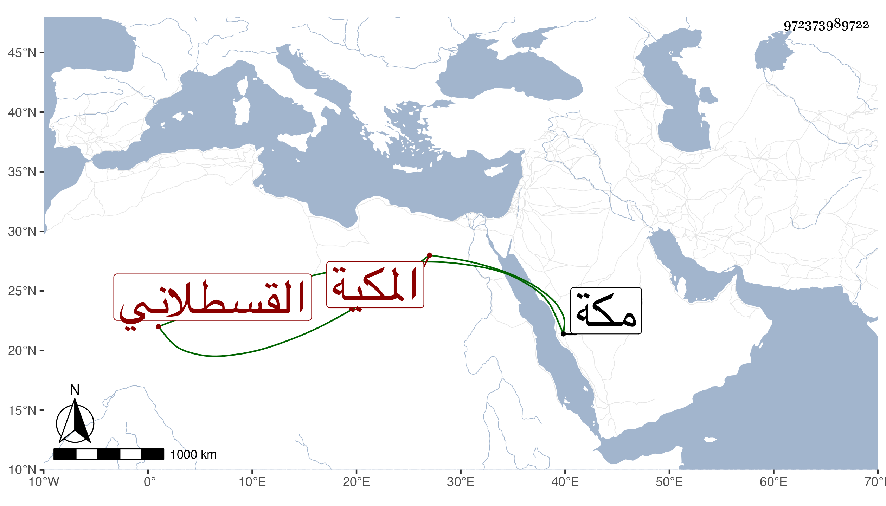

0902Sakhawi.DawLamic.ITO20230111-ara1.EIS1600.972373989722
Biography ID: 972373989722
174
خديجة ابنة أبي عبد الله محمد بن حسن بن الزين محمد بن الامين محمد ابن القطب محمد بن أحمد بن علي أم أحمد القسطلاني المكية أجاز لها في سنة ثمان وثمانين وسبعمائة فما بعدها النشاوري وعزيز الدين المليجي والصردي وابن حاتم وابن الشيخة والاميوطي وآخرون وتزوجت ابن عمها محمد بن أحمد بن حسن فولدت له ثم طلقها فتزوجت قريبها ايضا أحمد بن أبي الخير محمد بن حسين ابن الزين فولدت له ثم تزوجت بأخي زوجها الاول العفيف عبد الله بن أحمد فأولدها عدة كاحمد الحرضي وام كمال ، اجازت لصاحبنا ابن فهد وغيره ، وماتت في رمضان سنة ست واربعين بمكة .
